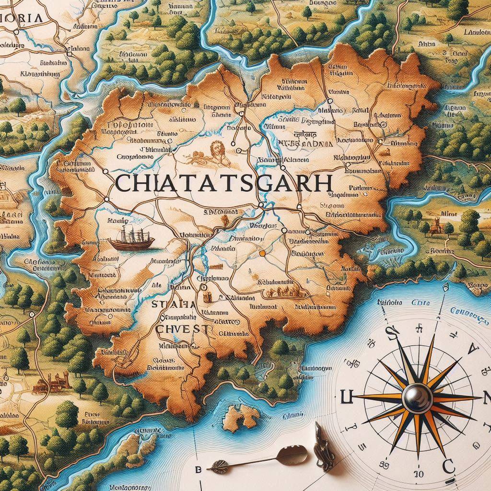
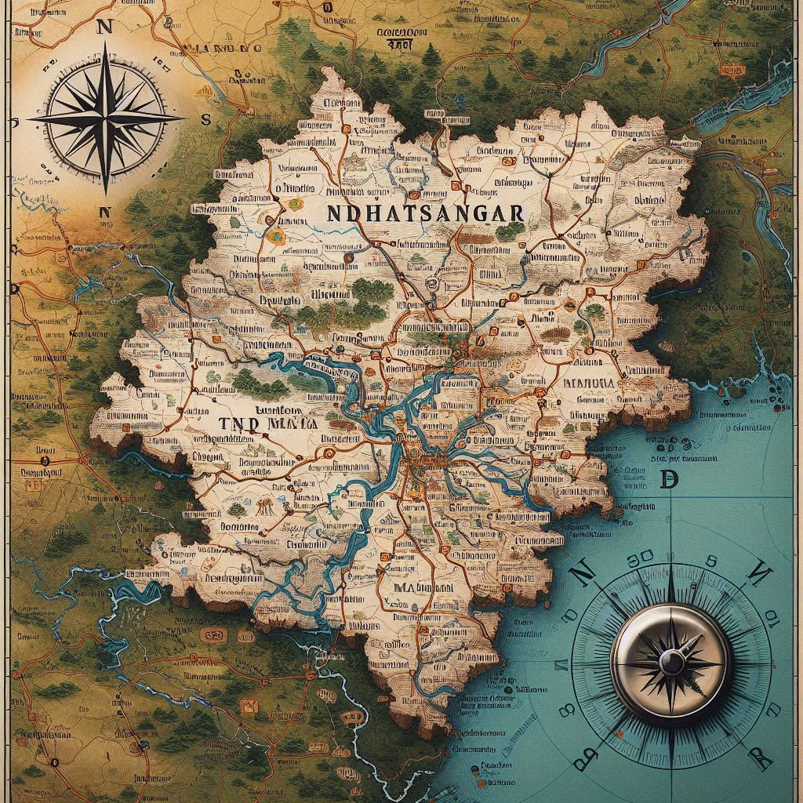

Chhattisgarh, located in central India, is a state known for its diverse geography, rich mineral
resources, and lush forests. Here’s a detailed overview of its geographical location:
1. Location and Borders
- Coordinates: Chhattisgarh is situated between 20.4203° N latitude and 81.3731° E
longitude.
- Borders: The state is bordered by Madhya Pradesh to the northwest, Uttar
Pradesh to the north, Odisha to the southeast, Telangana to the south, and
Maharashtra to the southwest.
2. Area
- Total Area: Chhattisgarh covers an area of approximately 135,192 square kilometers
(52,199 square miles), making it the 10th largest state in India in terms of area.
3. Topography
- Plateau Region: Much of Chhattisgarh lies on the Chhota Nagpur Plateau,
characterized by hilly terrains, valleys, and plateaus. The state is predominantly a plateau
region with an average elevation of about 300-600 meters above sea level.
- Forests: Chhattisgarh is known for its rich forest cover, which accounts for nearly
44% of its total area. These forests are home to diverse flora and fauna, contributing to
the state’s ecological significance.
- Rivers: Several rivers flow through Chhattisgarh, including the Mahanadi,
Godavari, Indravati, and Shivnath. The Mahanadi River is one of the major
rivers in the region, providing water for irrigation and hydroelectric projects.


4. Climate
- Tropical Climate: Chhattisgarh experiences a tropical climate, characterized by three
main seasons: summer, monsoon, and winter.
- Summer (March to June): The summers can be hot, with temperatures often reaching up to
45°C (113°F).
- Monsoon (June to September): The monsoon season brings heavy rainfall, contributing
significantly to the state’s agriculture.
- Winter (November to February): Winters are mild and pleasant, with temperatures ranging
between 10°C to 25°C (50°F to 77°F).
5. Mineral Resources
- Chhattisgarh is rich in mineral resources, with large deposits of coal, iron ore, bauxite,
limestone, and dolomite. The state is one of the leading producers of coal in India, making it a
significant contributor to the country's energy supply.
6. Biodiversity
- The state’s diverse geography and forest cover make it home to a variety of wildlife, including
tigers, leopards, sloth bears, and numerous species of birds. Notable national parks and
wildlife sanctuaries, such as Kanger Valley National Park, Barnawapara Wildlife
Sanctuary, and Indravati National Park, protect the region's rich biodiversity.
Conclusion
Chhattisgarh's geographical location in the heart of India contributes to its rich natural
resources, diverse ecosystems, and significant agricultural productivity. Its varied topography,
climate, and extensive forest cover play a vital role in shaping the state’s economy, culture, and
lifestyle, making it an important region in India.